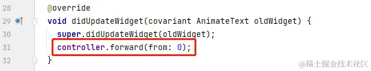
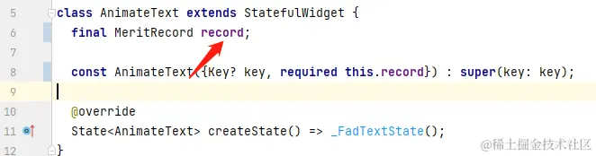

- 01 前言-教程内容导读.md.html
- 02 Flutter 开发环境的搭建.md.html
- 03 新手村基础 Dart 语法 (上).md.html
- 04 新手村基础 Dart 语法 (下).md.html
- 05 Flutter 计数器项目解读.md.html
- 06 猜数字界面交互与需求分析.md.html
- 07 使用组件构建静态界面.md.html
- 08 状态数据与界面更新.md.html
- 09 校验结果与提示信息.md.html
- 10 动画使用与状态周期.md.html
- 11 猜数字整理与总结.md.html
- 12 电子木鱼界面交互与需求分析.md.html
- 13 电子木鱼静态界面构建.md.html
- 14 计数变化与音效播放.md.html
- 15 弹出选项与切换状态.md.html
- 16 用滑动列表展示记录.md.html
- 17 电子木鱼整理与总结.md.html
- 18 白板绘制界面交互与需求分析.md.html
- 19 认识自定义绘制组件.md.html
- 20 通过手势在白板上绘制.md.html
- 21 白板画笔的参数设置.md.html
- 22 撤销功能与画板优化.md.html
- 23 应用界面整合.md.html
- 24 数据的持久化存储.md.html
- 25 网络数据的访问.md.html
- 26 教程总结与展望.md.html
- 捐赠
16 用滑动列表展示记录
1. 功德记录的功能需求
现在想要记录每次点击时的功德数据，以便让用户了解功德增加的历史。对于一个需求而言，最重要的是分析其中需要的数据，以及如何维护这些数据。
效果如下，点击左上角按钮，跳转到功德记录的面板。功德记录界面是一个可以滑动的列表，每个条目展示当前功德的 木鱼图片、音效名称、时间、功德数 信息：
| 标题 | |
|---|---|
根据界面中的数据，可以封装一个类来维护，如下 MeritRecord 类。其中 id 是一条记录的身份标识，就像人的身份证编号，就可以确保他在社会中的唯一性。
class MeritRecord {
final String id; // 记录的唯一标识
final int timestamp; // 记录的时间戳
final int value; // 功德数
final String image; // 图片资源
final String audio; // 音效名称
MeritRecord(this.id, this.timestamp, this.value, this.image, this.audio);
}
对于功德记录的需求而言，需要在 _MuyuPageState 中新加的数据也很明确: 对 MeritRecord 列表的维护。接下来的任务就是，在点击时，为 _records 列表添加 MeritRecord 类型的元素。
---->[_MuyuPageState]----
List<MeritRecord> _records = [];
2. 列表数据的维护
对于生成唯一 id ， 这里使用 uuid 库，目前最新版本 3.0.7。记得在 pubspec.yaml 的依赖节点配置:
dependencies:
...
uuid: ^3.0.7
如下代码是 _onKnock 函数处理点击时的逻辑，其中创建 MeritRecord 对象，构造函数中的相关数据，在状态类中都可以轻松的到。
---->[_MuyuPageState]----
final Uuid uuid = Uuid();
void _onKnock() {
pool?.start();
setState(() {
_cruValue = knockValue;
_counter += _cruValue;
// 添加功德记录
String id = uuid.v4();
_records.add(MeritRecord(
id,
DateTime.now().millisecondsSinceEpoch,
_cruValue,
activeImage,
audioOptions[_activeAudioIndex].name,
));
});
}
这里来分析一下上一篇中切换木鱼样式，会导致动画触发的问题。原因非常简单，因为动画控制器会在 didUpdateWidget 中启动。而切换木鱼样式时，通过触发了 setState 更新主界面的木鱼图片。于是会连带触发动画器的启动，解决方案有很多：
- 解决方案 1 : 将动画控制器交由上层维护，仅在点击时启动动画。
- 解决方案 2 ：为 didUpdateWidget 回调中动画启动添加限制条件。
- 解决方案 3 ：切换木鱼样式时，使用局部更新图片，不重新构建整个
_MuyuPageState。

上面的三个方案中各有优劣，综合来看，方案 1 是最好的；方案 2 次之；方案 3 虽然可以解决当前问题，但治标不治本。就当前代码而言，使用 方案 2 处理最简单，那么动画启动的限制条件是什么呢?
当功德发生变化时，才需要启动动画。
而现在每个功德对应一个 MeritRecord 对象，且 id 可以作为功德的身份标识。功德发生变化 ,也就意味着新旧功德 id 的不同。那么具体的方案就呼之欲出了，如下所示：让 AnimateText 持有 MeritRecord 数据

在状态类 didUpdateWidget 回调中，可以访问到旧的组件，通过对比新旧 AnimateText 组件持有的 record 记录 id ，当不同时才启动动画。这样就避免了在功德未变化的情况下，启动动画的场景。通过个问题的解决，想必大家对状态类的 didUpdateWidget 方法，有更深一点的了解。
@override
void didUpdateWidget(covariant AnimateText oldWidget) {
super.didUpdateWidget(oldWidget);
if (oldWidget.record.id != widget.record.id) {
controller.forward(from: 0);
}
}
小练习: 自己尝试使用解决方案 1 ，解决动画误启动问题。
3. ListView 的简单使用
我们已经知道，通过 Column 组件可以实现若干个组件的竖向排列。但当组件数量众多时，超越 Column 组件尺寸范围后，就无法显示；并且在 Debug 模式中会出现越界的异常(下左图)。很多场景中，需要支持视图的滑动，可以使用 ListView 组件来实现 (下右图)：
| Column | ListView |
|---|---|
这里历史记录界面通过 RecordHistory 组件构建，构造函数中传入 MeritRecord 列表。主体内容通过 ListView.builder 构建滑动列表，通过 _buildItem 方法，根据索引值返回条目组件。
class RecordHistory extends StatelessWidget {
final List<MeritRecord> records;
const RecordHistory({Key? key, required this.records}) : super(key: key);
@override
Widget build(BuildContext context) {
return Scaffold(
appBar:_buildAppBar(),
body: ListView.builder(
itemBuilder: _buildItem,
itemCount: records.length,
),
);
}
PreferredSizeWidget _buildAppBar() =>
AppBar(
iconTheme: const IconThemeData(color: Colors.black),
centerTitle: true,
title: const Text(
'功德记录', style: TextStyle(color: Colors.black, fontSize: 16),),
elevation: 0,
backgroundColor: Colors.white,
);
在 _buildItem 方法中，使用 ListTile 组件构建条目视图；其中：
leading表示左侧组件，使用CircleAvatar展示圆形图形；title表示标题组件，展示功德数；subtitle表示副标题组件，展示音效名称；trailing表示尾部组件，展示日期。 注: 这里使用DateFormat来格式化时间，需要在依赖中添加intl: ^0.18.1包。
DateFormat format = DateFormat('yyyy年MM月dd日 HH:mm:ss');
Widget? _buildItem(BuildContext context, int index) {
MeritRecord merit = records[index];
String date = format.format(DateTime.fromMillisecondsSinceEpoch(merit.timestamp));
return ListTile(
leading: CircleAvatar(
backgroundColor: Colors.blue,
backgroundImage: AssetImage(merit.image),
),
title: Text('功德 +${merit.value}'),
subtitle: Text(merit.audio),
trailing: Text(
date, style: const TextStyle(fontSize: 12, color: Colors.grey),),
);
}
}
最后在 _MuyuPageState 中处理 _toHistory 点击事件,通过 Navigator 跳转到 RecordHistory 。
---->[_MuyuPageState]----
void _toHistory() {
Navigator.of(context).push(
MaterialPageRoute(
builder: (_) => RecordHistory( records: _records.reversed.toList()),
),
);
}
4.本章小结
本章主要介绍了如何使用可滑动列表展示非常多的内容，ListView 组件可以很便捷地帮我们让记录列表支持滑动。滑动视图使用起来并不是很复杂，但真的能用好，理解其内部的原理，还有很长的路要走。对于新手而言，目前简单能用就行了，以后可以基于小册来深入研究。
到这里，电子木鱼的基本功能完成了，当前代码位置 muyu 。不过现在的数据都是存储在内存中的，应用退出之后无论是选项，还是功德记录都会重置。想要数据持久化存储，在后面的 数据的持久化存储 一章中再继续完善，木鱼项目先告一段落。
© 2019 - 2023 Liangliang Lee. Powered by gin and hexo-theme-book.